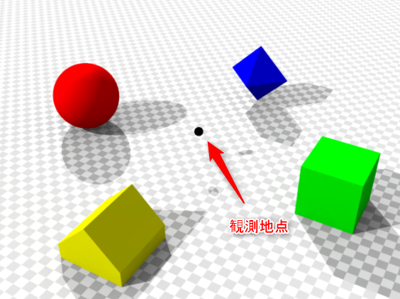
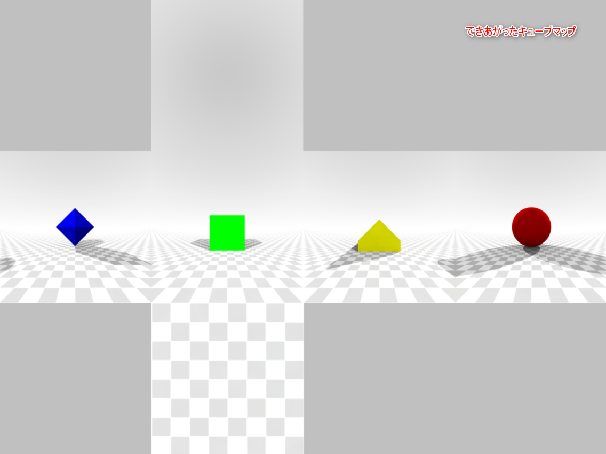
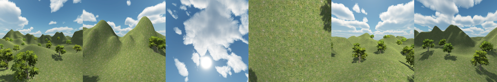

環境マッピング
「環境マッピング」とは周囲の景色を反射しているように見せる技術です。
例えば、パチンコ玉のような磨き上げられた金属の表面を表現したいとします。
↑※これは実写
このような表現は、スペキュラー（鏡面反射）を強くするだけでは実現できません。
↑いくらスペキュラーを強くしても、パチンコ玉のようには見えません…。
パチンコ玉をよく見てみると、周囲の景色を鏡のように映し出しています。これが、パチンコ玉らしさを生んでいます。
このように周囲の景色を物体表面に映し出すためには、光源から放たれた光がどのように反射して最終的にカメラに到達したのかを計算しなければなりません（通称：レイトレーシング）。これは、負荷の高い計算であり、リアルタイムレンダリングではとても実現できません。そこで、考案された方法が環境マッピングです。周囲の景色をあらかじめキューブマップという形式の画像にしておき、それを物体表面に映し出す手法です。
キューブマップとは、ある観測地点から、前・後・左・右・上・下の全6方向を撮影した画像のことです。

 引用：https://en.wikipedia.org/wiki/Cube_mapping#/media/File:Panorama_cube_map.pngキューブマップには、上図のように、サイコロの展開図のような形式や、下図のように横一列に並べたものなど、様々な形式があります。

キューブマップは、スカイボックスや環境マッピングなどに使われます。